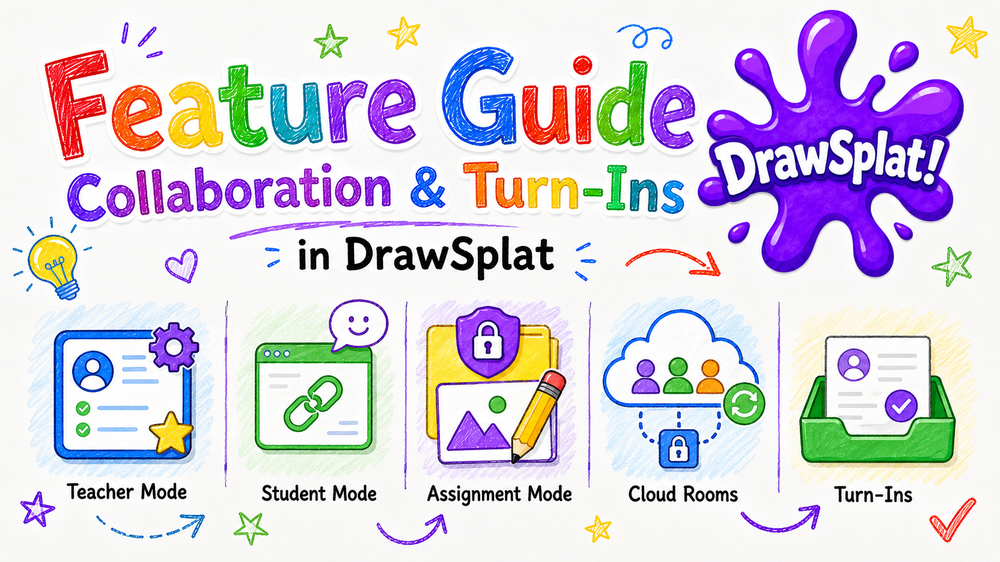

Feature Guide
Collaboration and Turn-Ins
Use district classrooms for authenticated assignments and review, or set up shared rooms and student links when DrawSplatTM is connected to the optional Google Apps Script backend.
District classrooms with MariaDB / MySQL
On a configured district installation, sign in with your roster-linked school account. Open File → Online classrooms. Teachers create assignments and review submissions with feedback; students open their enrolled classes and submit their own work. See District classrooms and rosters.
The instructions below describe the separate Apps Script shared-room workflow. A private online board is not automatically a live collaborative room.
Key ideas
- Teacher mode: full control of panels, backgrounds, templates, and setup.
- Student mode: student-facing links hide provider settings and restrict teacher-only controls.
- Assignment mode: protects teacher-layer objects while students add work on the student layer.
- Cloud rooms: use a shared room name and optional password to sync board state.
- Turn-ins: students can submit board work for teacher review when configured.
Teacher workflow
- Complete Google Drive and Sheets setup.
- Open Teacher Admin and save the Apps Script Web App URL.
- Open the board, switch to Education Tools, and enable assignment mode.
- Create the panels, prompts, backgrounds, and teacher-layer objects students need.
- Start cloud sync with a unique room name and optional room password.
- Copy the student link from Teacher Admin or the board and share it with students.
Student workflow
- Open the student link.
- Enter the room password if one is required.
- Add notes, drawings, text, images, diagrams, or responses on the student layer.
- Use turn-in when the teacher asks for a submitted copy.
Tips
- Use unique room names for each class period or activity.
- Use the narrowest Google Apps Script deployment access setting that works for your school.
- Keep teacher prompts on the teacher layer before students join.
- Use comments and the moderation dashboard to review feedback pins and submissions.